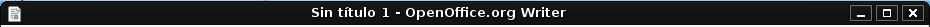
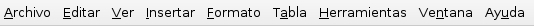
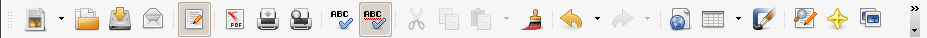
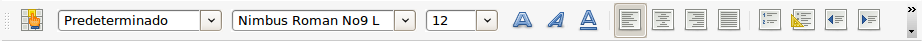
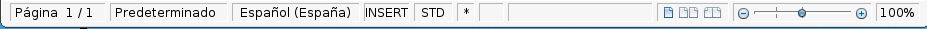
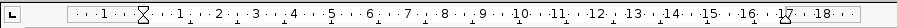

El entorno de trabajo de nuestro procesador de textos hace referencia al conjunto de herramientas que te ofrece el programa, para que puedas escribir tu documento y modificarlo respecto a tus gustos y necesidades.
Todas estas herramientas se distribuyen en barras colocadas en la parte superior de nuestra hoja en blanco, y que a continuación vamos a explicarte para que no te líes:
Barra de título: espacio destinado a mostrar el título de la ventana, que engloba el nombre del documento, y el nombre del programa que estamos utilizando, en este caso, OpenOffice.org Writer. En la barra de título se encuentran los botones para minimizar, maximizar, o cerrar la ventana.

Barra de menús: espacio situado debajo de la barra de título. Contiene una serie de opciones a elegir por el usuario para realizar determinadas tareas en el documento. Estas opciones se recogen a modo de 9 menús desplegables: Archivo, Editar, Ver, Insertar, Formato, Tabla, Herramientas, Ventana y Ayuda.

Barra de herramientas: espacio ubicado debajo de la barra de menús. Contiene botones que representan aquellas tareas que más se utilizan de la barra de menús.


Barra de estado: espacio colocado en la parte inferior de la hoja. Te proporciona información sobre el número de la página donde estás trabajando en ese momento, el número total de páginas que tiene el documento, el estilo de la página y el porcentaje de tamaño que tiene la hoja.

Barras de desplazamiento: suelen ser dos, una horizontal, colocada en la parte inferior de la hoja, y otra vertical, colocada en el lateral derecho. Se utilizan para visualizar todos los contenidos de la hoja que no podemos ver en pantalla.

Área de trabajo: no es más que tu hoja en blanco, donde parpadea esa pequeña barra vertical, que se llama
Cursor, y que te indica en qué parte del área de trabajo vas a empezar a escribir.
Anterior: 2 - Abro un documento nuevo o que ya existe
Siguiente: 4 - Escojo el estilo de la letra
{kind=link}
{kind=link}
{kind=link}
{kind=link}
{kind=link}
{kind=link}